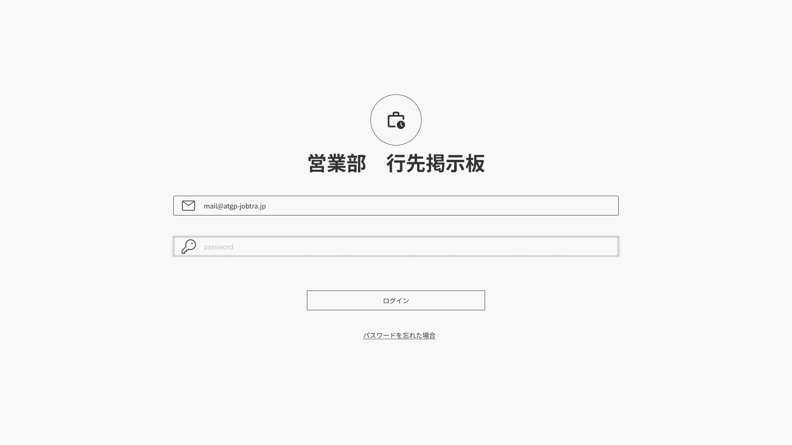
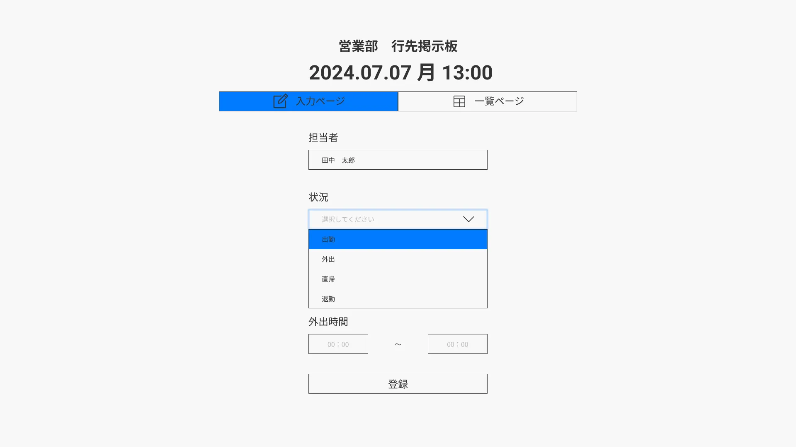
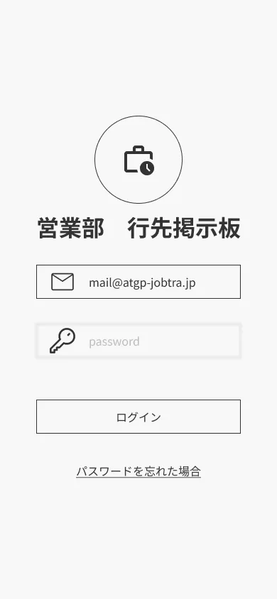
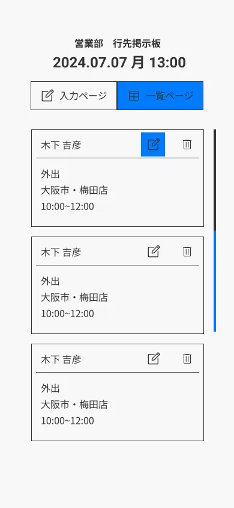

某IT企業
営業部行先掲示板Compass
行先掲示板Webアプリ
PCとスマートフォンで閲覧・修正可能な、行先掲示板Webアプリの制作を受注をしました。
WEB APP
ログイン用メールアドレス：kinoshita_yoshihiko@gmail.com
ログイン用パスワード：Kinoshita01#
制作範囲 Range
ヒアリング / デザイン / コーディング
使用ツール Tool
Figma / VS Code (HTML / CSS / JS)
制作期間 Period
2ヶ月間
制作メンバー Member
2名
サービス設定 Premise
- システム名「Compass」。
- セキュリティを考慮してメールアドレスとパスワードによる認証機能を搭載した社内用ツール。
- 1テーブルのデータベース構成。
- 時刻入力には「Flatpickr」ライブラリを採用し、正確かつスムーズな24時間表記の入力を可能。
ターゲット Target
頻繁に外出が発生する営業部門の社員と、チームを管理する課長職
新卒からベテランまで幅広い層が利用
目的 Purpose
アナログな掲示板による連絡コストの削減と、情報共有の迅速化。
営業担当者が自ら更新でき、管理者がリアルタイムに状況を把握できる環境を整える。
情報設計 Information
画面は「ログイン」「入力フォーム」「一覧表示」の3枚で構成。
登録項目は、担当者名、状況（出勤・外出・直帰・退勤）、要件、帰社時間。
一覧画面では当日分のみを表示し、編集ボタンから即座にデータを更新できるフロー。
デザイン Design
「営業社員の今を可視化する」をコンセプトに、装飾を抑えた清潔感のあるビジネスデザインを採用。
#F8F8F8
#333333
PC版は表形式で一覧性を高め、スマホ版はカード形式にするなど、デバイスに最適化したレスポンシブ設計。
移動中でも片手で操作できるユーザビリティを確保。
その他 Others
下に添付した画像は、PCとスマホのデザイン完成稿です。



